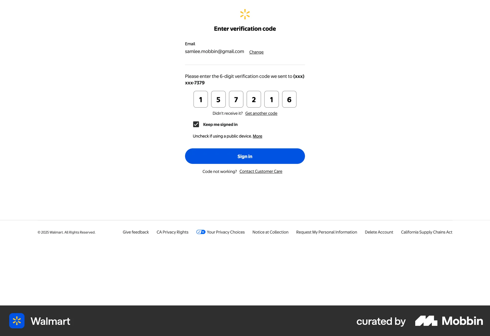

Web · code verification
Show where the code went
Walmart makes the destination email visible and keeps change, resend, and help close to the code field.
For the portal: prefill the invited address and return to the specific proposal after verification.
View Walmart reference ↗